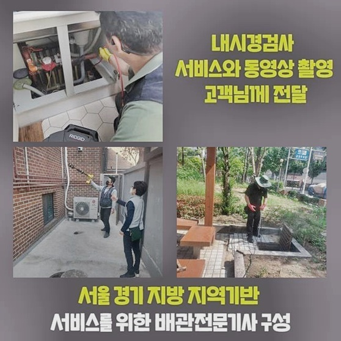
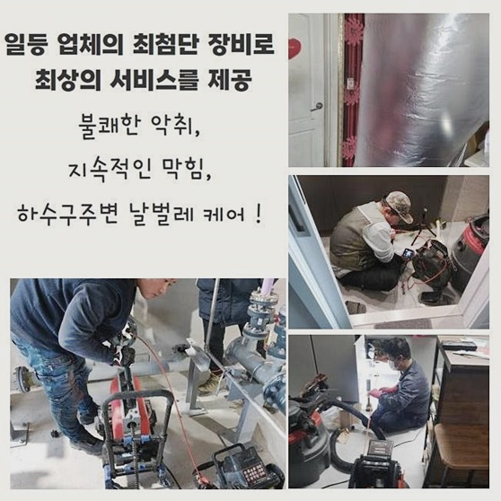
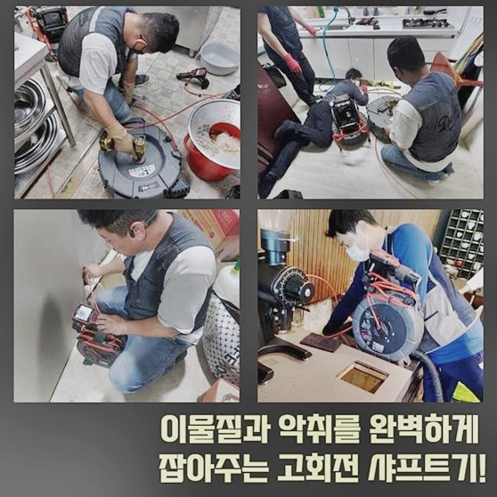
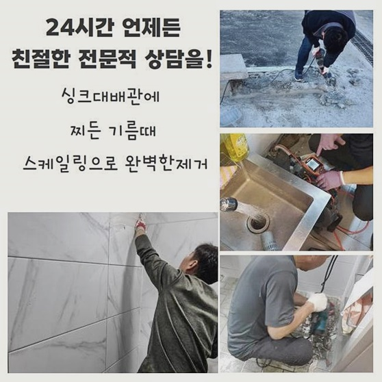
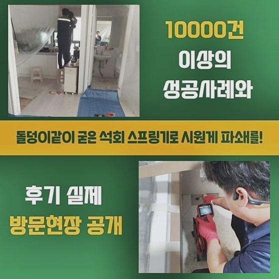
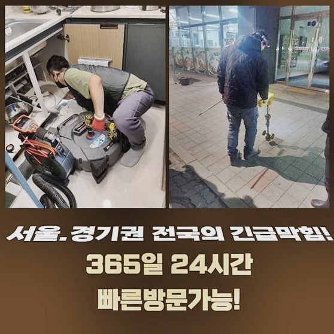

🏠 부천 원미동변기역류 약대동 하수구뚫어주는곳 설비
용인 싱크대막힘 전문 시공 후기

📋 작업 개요
- 위치: 용인
- 서비스 유형: 싱크대막힘, 변기막힘, 하수구막힘, 배관막힘, 역류해결, 뚫는업체, 배관청소
- 작업 일시: 2024. 8. 24. 10:00
- 업체명: 하수구수사대 (010-5615-2118)
🔍 문제 상황
부천 원미동변기역류 약대동 하수구뚫어주는곳 설비
하수시설이 마비됐을 때 계신 곳으로 향하여 고착화된 하수와 고객님의 막막함까지 해결해 드리는 작업을 해드리는 업체입니다!
답답한 기색없이 물이 졸졸 내려가던 하수도가 뜬금없이 중단이 빚어져서 나름 많은 방법을 물색하여 물길을 내보려고 했으나 실패를 하셨나요?
이런 답답한 경우라면 하수전문가인 저희에게 와달라 부탁하시면 아무 걱정없으시게 관통을 해드리고 있으니 망설임 없이 전화주세요!
하수가 막히는 동기는 보통은 이물질이 껴서 생기는 상황이 대다수입니다
만약에 내부에 이물질들이 딱히 차오르기 전인 수준이라면 고객님께서도 적용이 가능한 배관용 용해제나 압박감을 주는 막대기 등 간단한 활동만으로도 막힌 게 소거될 수 있습니다
빈틈없이 이물질들이 머물러있거나 들러붙어서 한 덩어리처럼 된 케이스라면 혼자 손보기는 그리 성공확률이 높진 않아요
초기 단계 이상이면 전문 전문가의 손을 빌려 해소를 해보셔야 하는데요
한 아파트에 살고 계시는 의뢰인분이 잘 돌아가던 싱크대에 트러블이 나서 얼른 뚫어주실 수 있냐하는 전화를 해주셨고 지체 없이 날렵하게 이동을 했습니다
하수구가 막혀버렸다면 거듭 막힘이 일어날 가능성이 있으니 주의해야 합니다
오염물질이 쭉 누적되어 물길이 봉쇄되어 버렸다면 완벽하게 정돈을 거쳐주지 않으면 오염물의 양이 늘어가며 똑같은 병변을 만들테니까요
아파트에서 촉발되는 하수구 오류의 경우들을 보면 중중한 수준이 잘 보이지 않으니 큰 우려는 전혀 없는 컨디션이었죠
늘 동일한 마음가짐을 가지며 의외로 난관이 생길 수 있다는 일념으로 다양한 변수를 대비하고 있어요

🔎 원인 분석
💡 전문가 진단: 정밀 진단 장비를 사용하여 슬러지의 고착 여부를 판명하고 타격/세척 작업을 실시했습니다.
원활한 하수구작업을 이어가려면 저희의 석션기기와 샤프트나 배관 관측 내시경 등의 툴과 장비의 힘을 빌려야 합니다
앞서 언급한 장치들은 모두 가지고 확인한 후 출발 드리고 있습니다
우선 석션이라는 기기는 청소기랑 유사성이 있는 기기인데 습기까지도 처리가 되는 점이 특수합니다
약간의 이물질만 있다면 이 석션툴만 운용해서 내부 석션작업을 해주면 바로 물길이 나타나는 작업지들도 제법 있네요
이런 초기 케이스들은 소수일 뿐이며 좀 더 노력을 기울여야하는 사건이 훨씬 많다고 할 수 있어요
석션장비는 고형화된 이물질 흡입을 하는 동시에 관로 속의 잔수들을 빨아 당길 수 있는데 뿌연 고인 물을 없애줘야 배관 촬영 기기를 들여보낼 수 있는 환경이 조성돼요
어디가 막혀있는지 알려주시면 바로 오류가 생긴 측면을 육안으로 관찰 후 본격진단을 합니다
뿌옇게 물도 고여있었지만 막힘이 지속되어오다 장기간 부패한 하수가 치솟는 상황이 있었나 봅니다
물을 조금씩 내보낸다면 괜찮을 수 있으나 만약 많은 물을 부었을 때 역행이 발생한다면 물이 내려갈 여유공간이 없고 노폐물이
과잉 축적된 슬러지가 물이 고이고 압력이 차다가 역행이 벌어지고 마는 거죠
제일 먼저 석션기 작업을 택하여 시작해 보았더니 슬러지 덩어리는 온데간데 없었고 물만 찰랑거리며 흡입되었네요
역행은 쭉 이어지는 수준인데다 차오른 물 역시 고스란히 정체해 있었습니다
시야를 가리는 물기를 소거했으니 실제 현황을 살펴보면서 동기를 추적하기 위해서 환한 라이트가 달린 내시경기를 쑥 내려 보았어요

🔧 작업 과정
배관으로 진입한 지 오래되지 않아서 모니터로 찌꺼기가 발견됐어요
똘똘 뭉쳐있는 기름기가 시야를 가득 메워서 앞이 전혀 감지되지 않는 정도였어요!
이물질의 양이 상당한 설비인만큼 개수대의 물이 유연하게 흘러갈리가 전혀 없는 컨디션이었죠
배관 기능을 정상 반열에 올리려면 오염물질을 어떻게든 제거해야 했습니다
경화되고 말라붙은 기름 덩어리의 경우에는 파쇄작업을 거쳐서 흡입 작업을 거쳐야 하므로 회전하는 샤프트로 먼저 기름진 덩어리를 잘게 나눠주는데 집중했어요
샤프트의 앞코 부분에 장착된 노커가 돌아가면서 세세하게 분리가 되도록 조금씩 잘라 나갔습니다
샤프트작업을 하는 동안에는 카메라로 지속적으로 체크업을 하면서 진행하고 있으니 배관이 크랙이나 부서짐이 생기지 않아요
오래 업계에 몸 담아 온 배관 베테랑이 직접 바람직한 레벨로 작동을 시키니 우려하지 않으셔도 됩니다
여러 고장건을 고쳐왔고 대응 매뉴얼이 충분하니 풀어나가기 까지의 문턱이 제법 높은 상황에서도 당황하지 않고 퀄리티 높은 작업이 가능해요
여러가지 면들을 꼼꼼히 따져보고 적절한 기기를 선정하고 남은 잔량없이 처리하는 데에 열과 성을 다하고 있어요
작업 도중과 끝에도 카메라로 작업이 이뤄지는 배관 내부가 다친 곳은 없는지 두루 살펴봐 드립니다
웬만큼 돌린 이후에 샤프트로 할 일이 끝나면 그 다음은 석션을 넣어 적당한 크기로 썰린 노폐물을 원활하게 소거해 줍니다
석션기로 마무리를 하려고 샤프트의 몸체를 당겨서 구멍 밖으로 올려보니 바디에 끈적한 기름쓰레기가 달라붙어 있었네요
계속 아래로 내려가며 슬러지를 파쇄하고 끌어당기는 일련의 행위를 되풀이하며 내측 환경을 개선시키다 보면 어느순간 막힘 사안이 모두 풀리게 된답니다
물밑에서 오랫동안 찌꺼기가 자리해 왔기때문에 썩은내도 상당한 수준이더라고요
문제가 되던 슬러지를 없애는 데에 집중하다보면 자연히 이런 지독한 냄새 문제도 해소되어 뿌듯함을 느끼게 됩니다
남은 부분이 전혀 잔여하지 않게끔 내부가 쾌적할 정도로 배수로를 청소해 나가요
상당수의 기름 찌꺼기가 나온 이후라서 이전에 막혀있던 때 보다는 딴 판이라고 해도 과언이 아니죠
이제는 막혀있는 측면들을 깔끔하게 관통시켰고 내부의 오염 물질들을 마저 흡수를 시켜줘서 작업의 방점을 찍게 됩니다
모든 작업 후에 카메라로 안쪽의 상황을 판별해 보니 갑갑하기만 했던 문제성 관로가 초기 설치상태로 돌아온 것을 볼 수 있었고 뿌듯함이 느껴졌네요
스트레스가 많으시던 고객님도 모니터링도 하고 설명을 들으시곤 안도의 한숨을 내쉬시더라고요


✅ 작업 완료
마음 놓고 시설을 이용하시도록 끊임없이 수십 분에 거쳐 청결관리를 해드린 결과 물이 내려가는 길목은 깊숙한 곳까지 감지될 정도로 나아지고 냄새도 전혀 없었죠
다음은 개수대에서 물을 틀고 배수테스트를 실시해 보았더니 시원한 소리를 내면서 통수과정이 스무스하게 진행됐어요
이제는 다량의 물을 단번에 내릴 때 역시 문제가 없는지 검사를 마저 해보았습니다
한가득 받아서 물을 흘러보냈는데도 주름관에서 역행하는 하자 없이 말끔히 처리가 되더라고요
필요에 의해 활용한 기계를 뽑아서 정리하고 주름관의 근처까지도 물기 하나 없이 정화하고 사용방법을 알려드렸습니다
하수구의 막힘으로 인하여 뚫어낼 뾰족한 수가 없다면 의뢰만 쉽게 맡겨주시면 원하시는 시간대에 방문드려 원인분석과 뚫음 업무까지 책임지고 도맡겠습니다



⚠️ 주방 싱크대 배관 막힘 예방 수칙
- ✅ 기름기가 묻은 식기나 프라이팬은 설거지 전 키친타올로 반드시 기름때를 닦아내세요.
- ✅ 주기적으로 싱크대 개수대에 뜨거운 물을 가득 받아 한 번에 내려 배관 내부 기름을 씻어내세요.
- ✅ 배수구 거름망을 미세한 필터로 사용하시고 음식물 찌꺼기가 틈으로 새어 들지 않게 관리하세요.
- ✅ 베이킹소다와 식초를 뜨거운 물과 함께 일주일에 한 번씩 부어주면 배관 살균과 막힘 예방에 좋습니다.
💡 핵심 정리
- 확실한 장비 작업(내시경 점검 및 샤프트 스케일링)으로 원인을 뿌리 뽑습니다.
- 작업 후 1년 이내에 동일한 부위 재발 시 100% 무상 A/S 서비스를 보장합니다.
- 서울 · 경기 · 인천 전 지역에 24시간 언제든 긴급 출동할 수 있도록 항시 대기 중입니다.
❓ 자주 묻는 질문 (FAQ)
🚨 용인 싱크대막힘 문제로 고민이신가요?
정확한 원인 진단과 확실한 시공으로 재발 없는 해결을 약속드립니다.
24시간 긴급 출동 | 서울 · 경기 · 인천 전지역 | 1년 내 재발 시 무상 A/S